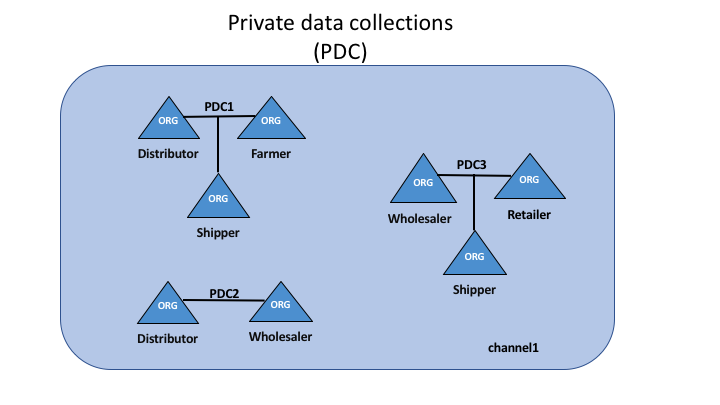

Private data¶
What is private data?¶
In cases where a group of organizations on a channel need to keep data private from other organizations on that channel, they have the option to create a new channel comprising just the organizations who need access to the data. However, creating separate channels in each of these cases creates additional administrative overhead (maintaining chaincode versions, policies, MSPs, etc), and doesn’t allow for use cases in which you want all channel participants to see a transaction while keeping a portion of the data private.
That’s why, starting in v1.2, Fabric offers the ability to create private data collections, which allow a defined subset of organizations on a channel the ability to endorse, commit, or query private data without having to create a separate channel.
What is a private data collection?¶
A collection is the combination of two elements:
- The actual private data, sent peer-to-peer via gossip protocol to only the organization(s) authorized to see it. This data is stored in a private database on the peer (sometimes called a “side” database, or “SideDB”). The ordering service is not involved here and does not see the private data. Note that setting up gossip requires setting up anchor peers in order to bootstrap cross-organization communication.
- A hash of that data, which is endorsed, ordered, and written to the ledgers of every peer on the channel. The hash serves as evidence of the transaction and is used for state validation and can be used for audit purposes.
The following diagram illustrates the ledger contents of a peer authorized to have private data and one which is not.
 private-data.private-data
private-data.private-data
Collection members may decide to share the private data with other parties if they get into a dispute or if they want to transfer the asset to a third party. The third party can then compute the hash of the private data and see if it matches the state on the channel ledger, proving that the state existed between the collection members at a certain point in time.
When to use a collection within a channel vs. a separate channel¶
- Use channels when entire transactions (and ledgers) must be kept confidential within a set of organizations that are members of the channel.
- Use collections when transactions (and ledgers) must be shared among a set of organizations, but when only a subset of those organizations should have access to some (or all) of the data within a transaction. Additionally, since private data is disseminated peer-to-peer rather than via blocks, use private data collections when transaction data must be kept confidential from ordering service nodes.
A use case to explain collections¶
Consider a group of five organizations on a channel who trade produce:
- A Farmer selling his goods abroad
- A Distributor moving goods abroad
- A Shipper moving goods between parties
- A Wholesaler purchasing goods from distributors
- A Retailer purchasing goods from shippers and wholesalers
The Distributor might want to make private transactions with the Farmer and Shipper to keep the terms of the trades confidential from the Wholesaler and the Retailer (so as not to expose the markup they’re charging).
The Distributor may also want to have a separate private data relationship with the Wholesaler because it charges them a lower price than it does the Retailer.
The Wholesaler may also want to have a private data relationship with the Retailer and the Shipper.
Rather than defining many small channels for each of these relationships, multiple private data collections (PDC) can be defined to share private data between:
- PDC1: Distributor, Farmer and Shipper
- PDC2: Distributor and Wholesaler
- PDC3: Wholesaler, Retailer and Shipper
private-data.private-data
Using this example, peers owned by the Distributor will have multiple private databases inside their ledger which includes the private data from the Distributor, Farmer and Shipper relationship and the Distributor and Wholesaler relationship. Because these databases are kept separate from the database that holds the channel ledger, private data is sometimes referred to as “SideDB”.
 private-data.private-data
private-data.private-data
Transaction flow with private data¶
When private data collections are referenced in chaincode, the transaction flow is slightly different in order to protect the confidentiality of the private data as transactions are proposed, endorsed, and committed to the ledger.
For details on transaction flows that don’t use private data refer to our documentation on transaction flow.
- The client application submits a proposal request to invoke a chaincode
function (reading or writing private data) to endorsing peers which are
part of authorized organizations of the collection. The private data, or
data used to generate private data in chaincode, is sent in a
transientfield of the proposal. - The endorsing peers simulate the transaction and store the private data in
a
transient data store(a temporary storage local to the peer). They distribute the private data, based on the collection policy, to authorized peers via gossip. - The endorsing peer sends the proposal response back to the client with public data, including a hash of the private data key and value. No private data is sent back to the client. For more information on how endorsement works with private data, click here.
- The client application submits the transaction to the ordering service (with hashes of the private data) which gets distributed into blocks as normal. The block with the hashed values is distributed to all the peers. In this way, all peers on the channel can validate transactions with the hashes of the private data in a consistent way, without knowing the actual private data.
- At block-committal time, authorized peers use the collection policy to
determine if they are authorized to have access to the private data. If they do,
they will first check their local
transient data storeto determine if they have already received the private data at chaincode endorsement time. If not, they will attempt to pull the private data from another peer. Then they will validate the private data against the hashes in the public block and commit the transaction and the block. Upon validation/commit, the private data is moved to their copy of the private state database and private writeset storage. The private data is then deleted from thetransient data store.
How a private data collection is defined¶
For more details on collection definitions, and other low level information about private data and collections, refer to the private data reference topic.
Purging data¶
For very sensitive data, even the parties sharing the private data might want — or might be required by government regulations — to “purge” the data stored on their peers after a set amount of time, leaving behind only a hash of the data to serve as immutable evidence of the transaction.
In some of these cases, the private data only needs to exist on the peer’s private database until it can be replicated into a database external to the blockchain network. The data might also only need to exist on the peers until a chaincode business process is done with it (trade settled, contract fulfilled, etc). To support the later use case, it is possible to purge private data if it has not been modified once a set number of subsequent blocks have been added to the private database.